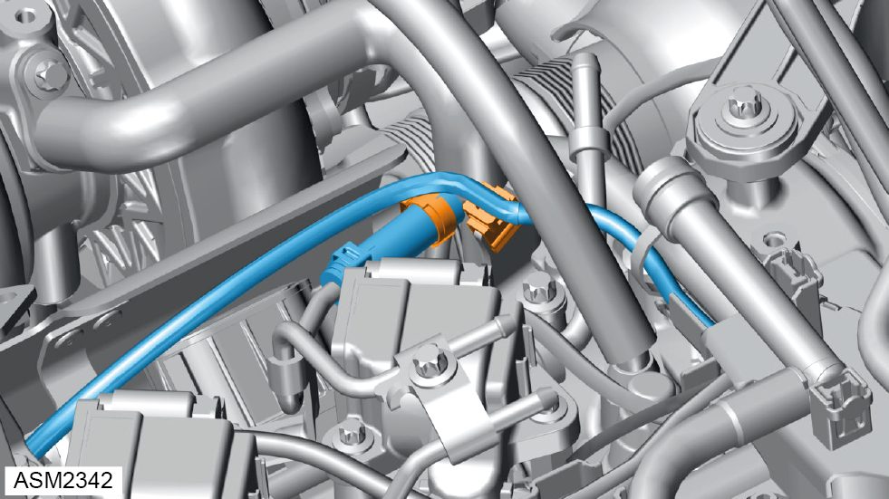
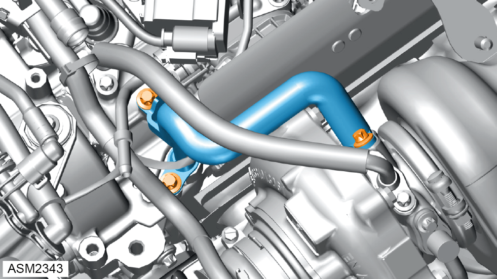

Coolant Feed Line - 4 Cylinder
Print
Operation Code: 40.21.18-02
Removal
- Drain coolant. Refer to procedure.
- Remove engine cover. Refer to procedure.

- Release clip securing engine harness to coolant feed line bracket.
- Release clamp securing coolant hose to coolant feed line.
- Disconnect coolant hose from coolant feed line.

- Remove bolt securing coolant feed line bracket to engine. Torque 8 Nm.
- Remove bolt securing coolant feed line to turbocharger. Torque 8 Nm.
- Remove bolt securing coolant feed line to engine. Torque 21 Nm.
- Remove coolant feed line.
NOTE: Plug exposed connections to prevent ingress of dirt.
Installation
- Installation is the reverse of removal procedure except for the following:
- Renew discarded O-rings.
- Renew discarded clamp.